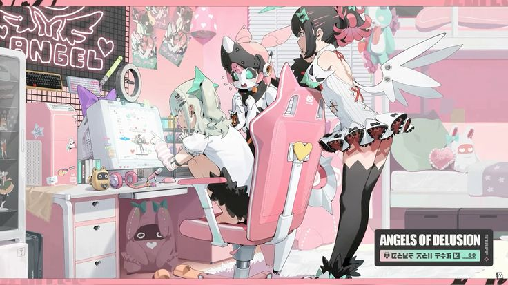
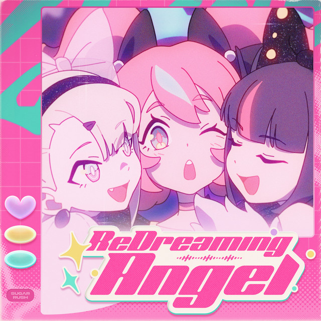

Angels of Delusion!
The Angels of Delusion (A.O.D) are an underground idol group and faction in the action game Zenless Zone Zero (ZZZ), debuting in Version 2.6 as S-Rank Agents. Based in New Eridu’s 404 Error Bar on Sixth, the group consists of Aria, Sunna, and their captain Nangong Yu. Their fans are nicknamed "Delulus"
Nangong: The group's Captain and choreographer. She has a real halo and prosthetic wings.
Aria: The lead vocalist and an intelligent construct who uses a holographic disguise to appear human, aiming for, or sometimes having, an angel aesthetic.
Sunna: The songwrite and lyricist. A shy, anxious, yet dedicated creator who acts as the group's "Wannabe" angel, offering a more grounded, mortal perspective.
Cecelia: The girls' manager who is the ex-idol Cersea who retired due to PTSD.
ReDreaming Angel, Turn Heartbeats into Tempo, Hold That Grudge Properly, Angel Loading...^_−☆
Their YouTube!
They livestream as vTubers on their YouTube channel and their songs are on the Zenless Zone Zero Youtube channel.
Go Support!
